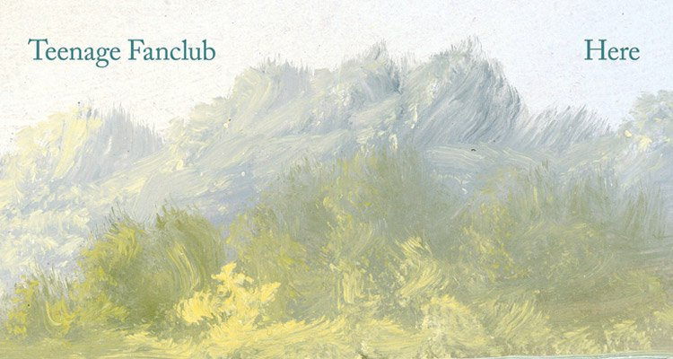

Here
Teenage Fanclub
Aquéllo de los inventos con gaseosa quizás lo idearon Norman Blake, Gerard Love y Raymond McGinley, la MSN de Teenage Fanclub. ¿Por qué? Pues porque después de más de 25 años de carrera siguen siendo capaces de sacar nuevo material y de una forma muy digna. Y lo hacen airosos porque se dedican a lo que saben, a lo que siempre han sabido hacer. No de la misma forma y con otra intensidad, pero en esencia, pop de manual. Delicado y efectista. Redondo como un balón y certero como una flecha. Si se te dan bien los arroces, los días importantes no te metas a la cocina a hacer pasteles de arándanos.